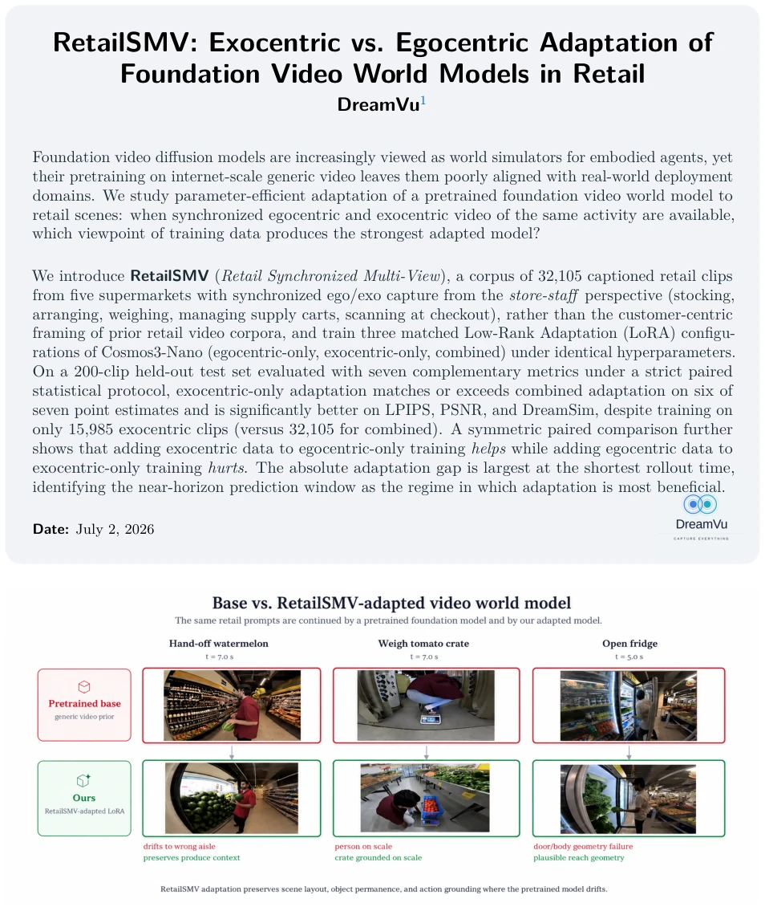
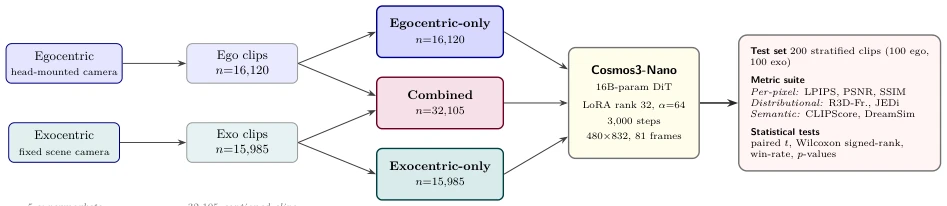
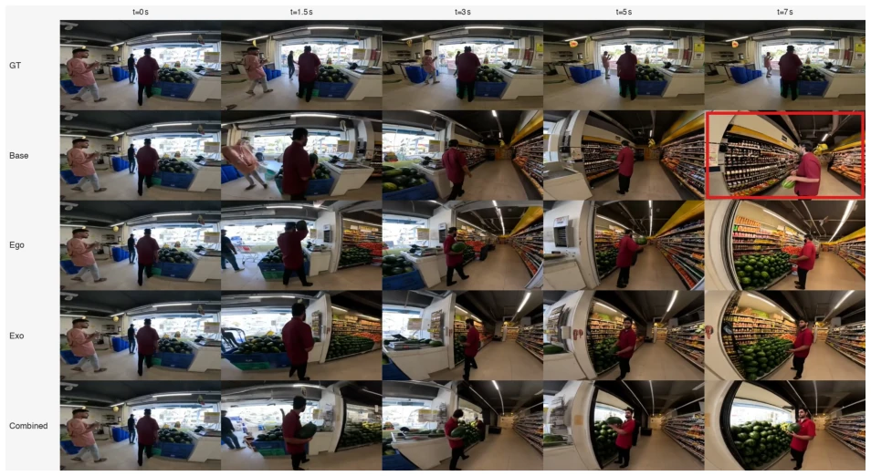
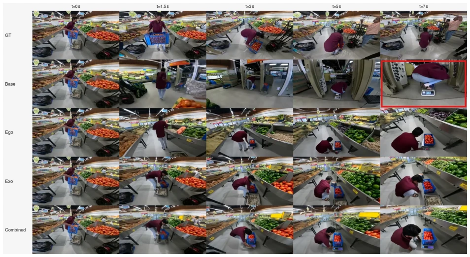
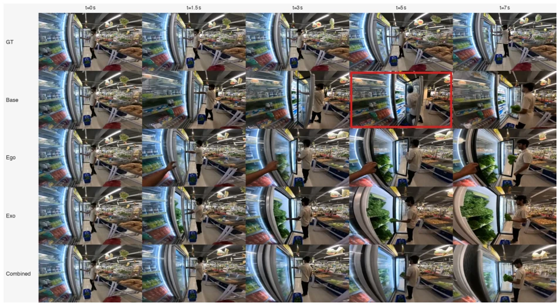
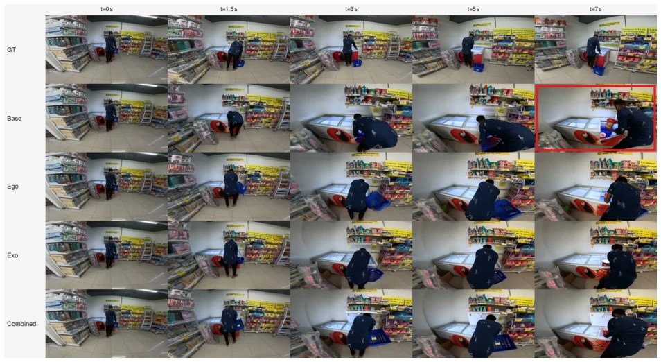
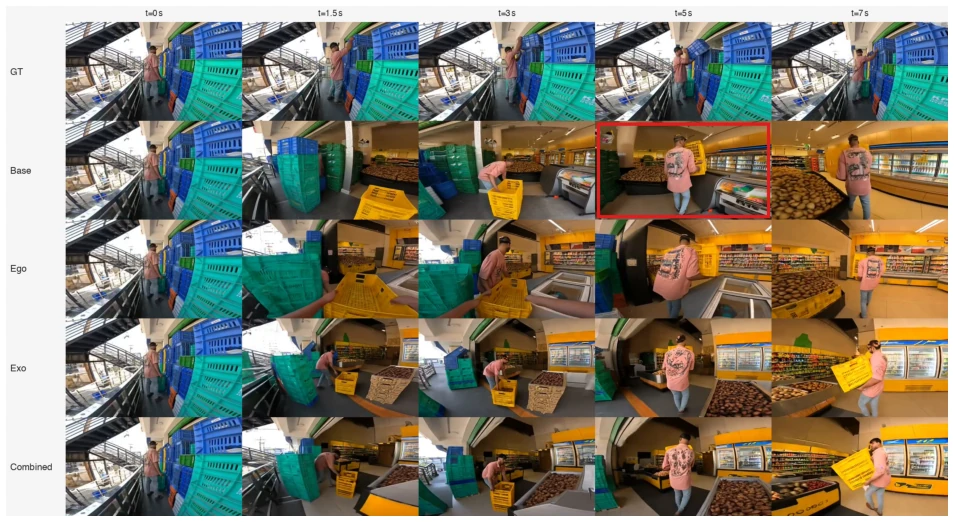
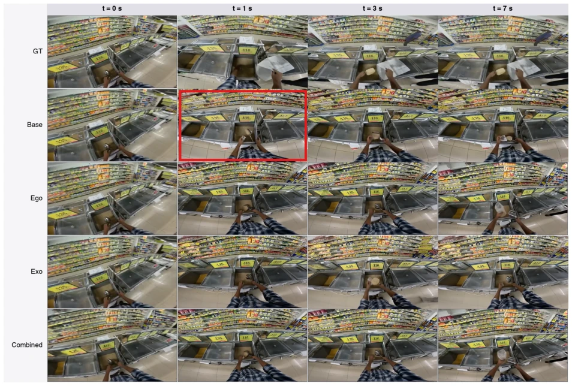
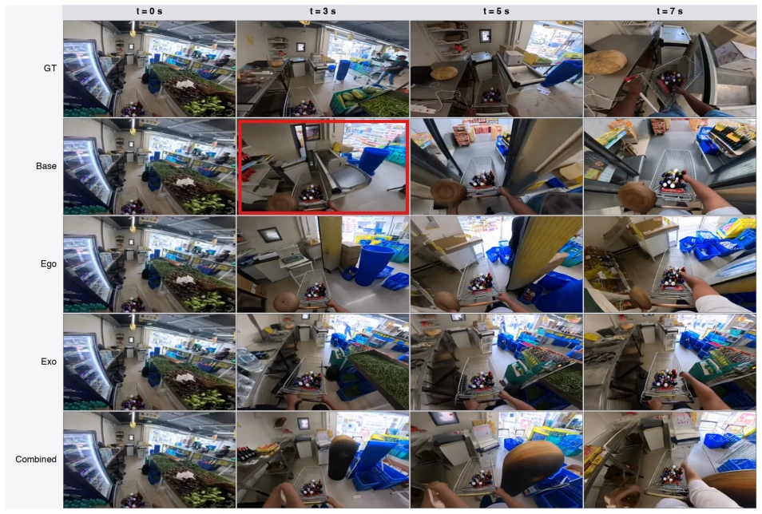
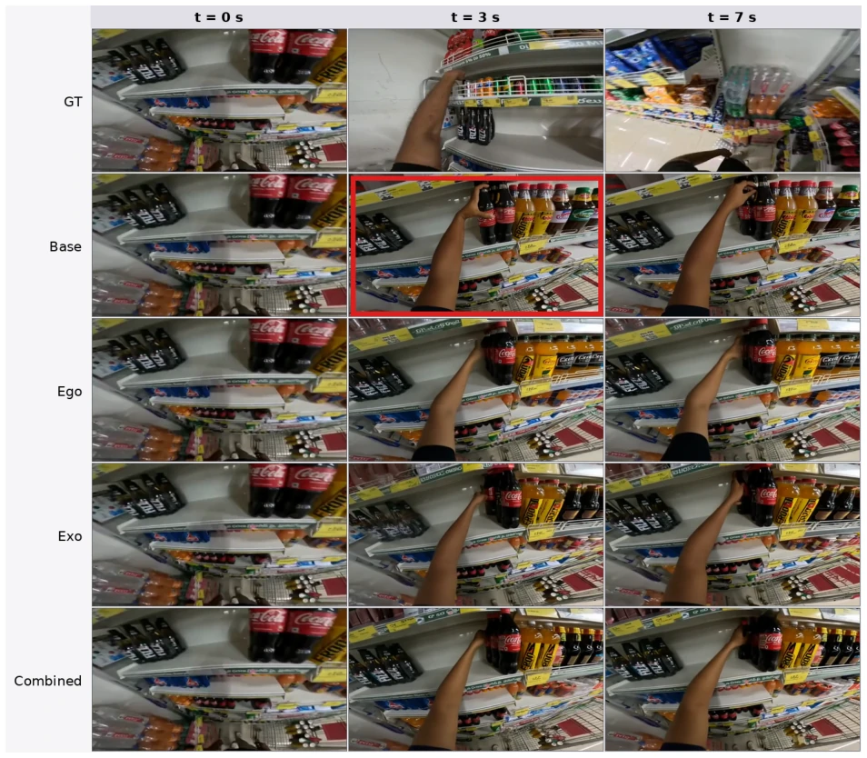

RetailSMV: Exocentric vs. Egocentric Adaptation of Foundation Video World Models in Retail
Amirreza Rouhi, Rajat Aggarwal, Parikshit Sakurikar, Anoop M. Namboodiri, Sashi P. Reddi abspdf
论文点评Review
这篇论文在零售具身智能领域抛出了一个反直觉的结论：在同步多视角数据下，仅用第三人称（Exocentric）视频适配世界模型，效果竟能吊打或持平“第一人称 + 第三人称”的混合训练，且数据量仅为一半。这直接挑战了“数据越多越好”的朴素直觉。亮点在于构建了 RetailSMV 数据集，实现了罕见的同步视角捕捉，且评估协议极其严谨，引入了 DreamSim 等现代指标。但槽点也不少：测试集仅 200 条，统计显著性虽强但泛化性存疑；零售场景特殊，结论能否迁移到驾驶或家庭机器人未知；此外仅用 LoRA 微调，未探索架构创新，感觉像是在“调参”而非“造轮子”。不过，对于 world model 的视角选择研究确实提供了新启发，尤其是近 horizon 预测的重要性。
This paper presents a counter-intuitive conclusion in the field of retail embodied intelligence: under synchronous multi-view data, adapting world models using only third-person (Exocentric) videos can outperform or match the mixed training of "first-person + third-person", with only half the data volume. This directly challenges the naive intuition that "more data is better." Highlights include constructing the RetailSMV dataset, achieving rare synchronous view capture, and employing extremely rigorous evaluation protocols that introduce modern metrics such as DreamSim. However, there are also many drawbacks: the test set has only 200 samples, statistical significance is strong but generalizability is questionable; the retail scenario is special, and whether the conclusions can be transferred to driving or home robots is unknown; additionally, only LoRA fine-tuning is used, without exploring architectural innovation, feeling more like "tuning parameters" rather than "building wheels." However, the research on view selection for world models does provide new insights, especially the importance of near-horizon prediction.
研究动机Motivation
基础视频世界模型（如 Sora, Cosmos）在通用互联网数据上预训练，但部署到特定领域（如零售）时会出现“漂移”，生成的场景布局和行为不符合物理规律（Rouhi et al., 2026）。现有零售视频数据集（如 MERL Shopping, PRISM）多关注顾客视角（browsing, picking），缺乏员工操作视角（stocking, weighing）的同步多视角数据（Grauman et al., 2024）。这导致具身智能体难以学习真实的零售环境动态。本文旨在解决领域对齐问题，探究在同步 Ego/Exo 数据下，哪种视角的适配能产生最强的零售世界模型，填补了现有工作缺乏受控视角对比的空白。
Foundation video world models (such as Sora, Cosmos) are pre-trained on general internet data, but exhibit "drift" when deployed to specific domains (such as retail), where generated scene layouts and behaviors do not conform to physical laws (Rouhi et al., 2026). Existing retail video datasets (such as MERL Shopping, PRISM) mostly focus on customer perspectives (browsing, picking), lacking synchronous multi-view data for employee operation perspectives (stocking, weighing) (Grauman et al., 2024). This makes it difficult for embodied agents to learn real retail environment dynamics. This paper aims to solve the domain alignment problem, investigating which view adaptation produces the strongest retail world model under synchronous Ego/Exo data, filling the gap in existing work lacking controlled view comparisons.

Figure 1 Base vs. RetailSMV-adapted video world model. The same retail prompts are continued by the pretrained Cosmos3-Nano foundation model (top, red) and by our RetailSMV-adapted LoRA (bottom, green) under identical inference settings. RetailSMV adaptation preserves scene layout (hand-off watermelon), action grounding (weigh tomato crate), and physical geometry (open fridge) where the pretrained baseline drifts.
The overall process is based on the Cosmos3-Nano foundation model, using Low-Rank Adaptation (LoRA) for parameter-efficient adaptation. First, the RetailSMV dataset is constructed, containing 32,105 synchronous Ego/Exo video clips, covering employee operation scenarios in 5 supermarkets. Next, three LoRA configurations are trained: Ego-only (16,120 clips), Exo-only (15,985 clips), and Combined (all clips), keeping hyperparameters consistent. During the inference stage, the UniPC sampler is used to generate videos based on the first frame and caption of the test set. Evaluation adopts a strict paired statistical protocol to compare baseline models. Innovations include introducing the RetailSMV synchronous multi-view dataset, designing controlled view stratification experiments to isolate training data views as the sole variable, and introducing modern metrics such as DreamSim and JEDi to compensate for the instability of traditional FVD under small sample sizes. LoRA configuration is set to rank r=32 and scaling alpha=64, trained for 3,000 steps, with validation loss reduced by approximately 2.8 times.

Figure 2 Pipeline overview. The RetailSMV corpus (section 3.1) provides synchronized egocentric and exocentric video across five real-world supermarkets, yielding 16,120 ego and 15,985 exo clips. Three matched LoRA configurations of the pretrained Cosmos3-Nano foundation video model NVIDIA (2025) (egocentric-only, exocentric-only, and combined) are trained under identical hyperparameters and optimization budget, isolating training-data viewpoint as the variable of interest. Every configuration is evaluated on the same 200-clip stratified held-out test set under a paired statistical protocol.
Using the RetailSMV dataset, the test set has 200 samples (100 Ego, 100 Exo). The baseline is pre-trained Cosmos3-Nano. Evaluation metrics include LPIPS, PSNR, SSIM, CLIPScore, DreamSim, R3D-Fréchet, JEDi. Main findings: Exo-only is better or equal to Combined in 6 out of 7 metrics, and significantly better on LPIPS, PSNR, DreamSim (p<10^-34). Although Exo-only data volume is only half, the distribution distance (R3D-Fréchet) improvement is the largest, dropping from 42.69 to 35.14. Ablation shows that adding Ego data to Exo is harmful, while the reverse is beneficial. Time analysis indicates that adaptation advantages are concentrated in the near-horizon (t=0.5s) prediction window, with the gap narrowing over time.

Figure 3 Hand-off watermelon. A produce-area hand-off scene. Base drifts away from the multi-person produce display and ends at t=7 s with the person holding a watermelon in a single hand in the wrong section of the store. All three adapted configurations preserve the produce context and a two-handed grip consistent with the prompt.
其他图片Other Figures

Figure 4 Weighing a tomato crate. The prompt directs the person to place a blue tomato crate onto a floor weighing scale. Base never executes the bend-and-place action and ends with the person’s body, rather than the crate, positioned on the scale. All three adapted configurations cleanly perform the squat-to-scale motion with the crate as the object that lands on the scale.

Figure 5 Opening a fridge to pick a vegetable. Base produces a geometry-violating frame at t=5 s in which the fridge door appears to pass through the person’s body. The three adapted configurations preserve the open-door geometry and a plausible reach for the vegetable inside the fridge.

Figure 6 Opening a freezer to take an ice cream. Base distorts the freezer structure as the rollout progresses; the adapted configurations preserve the freezer geometry, and exo-only produces the most physically sensible reach for the ice-cream tub.

Figure 7 Carrying a crate through an aisle. Base produces a hand–crate interpenetration at t=5 s: the person’s hands appear to pass through the yellow crate while walking. The adapted configurations preserve a plausible two-hand carry posture.

Figure 8 Picking up a metal scoop at the bulk-grain bins. The conditioning frame shows the person standing at a row of open bulk-grain bins, ready to grasp a metal scoop. Base produces a frame at t=1 s in which the scoop drifts upward in mid-air with no hand around it (the agent–object grasp is lost); the three adapted configurations close the actor’s hand on the scoop and lift it as a single rigid body.

Figure 9 Pushing a cart through the aisle. The conditioning frame shows the person pushing a cart with bottles down an aisle whose back wall is closed. Base produces a frame at t=3 s in which a spurious opening appears in the back wall of the aisle, exposing an unrelated store section that is not present in the conditioning frame. The three adapted configurations preserve the original aisle wall and product layout for the full rollout, with exocentric-only producing the most stable scene geometry.

Figure 10 Reaching for a back-row bottle on the shelf. The conditioning frame shows the person reaching for a black bottle at the back of a beverage shelf. Base produces an implausible grip pose around the bottle at t=3 s with no clear contact configuration; the three adapted configurations produce a recognisable reach-and-grasp consistent with picking up a back-row bottle.